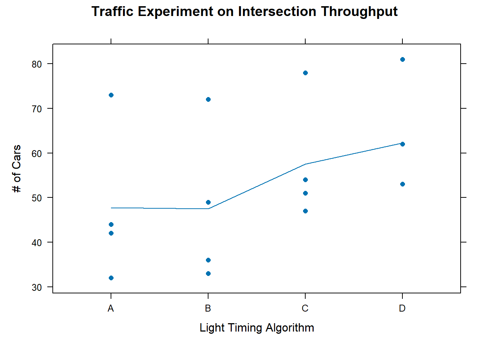

The CB[1] design works well when there is only one variable to block on. What can be done when there are two nuisance factors to block on? If those two blocking factors and the treatment all have the same number of levels, then a latin square design should be used.
When to use Latin Square
Latin Square designs are appropriate when
Two blocking factors and one treatment factor
All three factors have the same number of levels
Treatments can be assigned to experimental units
Previously, in the CB[1] design we used the toothbrush study and blocked on participant. If we only had 4 participants and we considered “order” a nuisance factor, we could use a Latin Square. By adding “order” as a blocking variable, we can ensure that the order of the treatments does not all become the same by random chance alone.
Blocking on subjects and order of treatments is one of the most common applications of a Latin Square design in psychology. (Treatments, of course, must be something that can be assigned to experimental units). Be aware that in these types of experiments carry-over effects (such as learning and fatigue) can be problematic. Experimental protocols need to proactively address potential carry-over effects1.
Latin Square designs are also common in agriculture, where they were originally developed. The field is divided into a square grid and treatments are randomly applied to each cell of the grid. The blocking variables are the row position and column position in the grid respectively.
Figure 1 shows two images of Latin Square designs in agriculture, pulled from Bailey, Cameron, and Connelly’s 2008 article in American Mathematical Monthly 2. Figure 1 (a) is a picture of a 5×5 forestry experiment on a hill in Beddgelert in Wales. The experiment was “designed by Fisher, laid out in 1929, and photographed in about 1945”. Figure 1 (b) shows “a 6×6 experiment to compare methods of controlling aphids; conducted by Lesley Smart at Rothamsted Research, photographed in 2004.”
(a)
(b)
Figure 1: Agricultural examples of latin squares
Regardless of whether the application is psychology, agriculture or something else, the key design feature of a Latin Square design is that each treatment appears exactly once in each row and in each column of the square.
There are various extensions to this basic Latin Square idea. Graeco Latin Squares can be used if you have more than 2 variables to block on (provided all factors have the same number of levels, and the number is not 6). Replicated Latin Squares is useful if the number of experimental units is a multiple of (instead of exactly equal to) the number of treatment factor levels. Replicated Latin Squares (including “Latin Rectangles”) is discussed briefly here and here.
Factor Structure
In the factor diagram, one nuisance factor’s levels are associated with the row partitions of the dataset. The other nuisance factor’s levels are marked by partitioning the dataset by columns. The treatment is assigned a letter inside the factor diagram. Figure 2 is a factor structure diagram for a Latin Square design where the controlled factors all have 4 levels. This is an unrandomized layout of the treatments: each row (and column) follows the same sequence of treatments. In the Design section we will learn to randomize the design.
Figure 2: Factor Structure for Latin Square Design with 4 Treatment Levels
Model and Hypotheses
Each factor (i.e. meaningful partition of the data) in Figure 2 corresponds to a term on the right hand side of Equation 1:
\(y_{ij}\) is the observation that belongs to level i of \(\alpha\), level j of \(\beta\), and level k of \(\gamma\).
\(\mu\) is the grand mean of the entire dataset.
\(\alpha\) is the effect of the block factor partitioned by rows
\(\beta\) is the effect of the block factor partitioned by columns
\(\gamma\) is the effect of the treatment factor, designated by a letter value. Each treatment appears exactly once in each row and each column.
\(\epsilon\) is the residual error term
The Latin Square is an incomplete block design. In other words, each treatment does not show up in each block. In other words, not all subscript combinations of i, j, and k will be observed. Therefore there are insufficient observations to estimate and test interaction effects.
The hypothesis for the treatment is
\[H_0: \gamma_k = 0 \text{ for all }k\]
\[H_a: \gamma_k \ne 0 \text{ for some }k\]
The focus of the study is on the treatment factor. However, you can test the block factors in the same way you test the treatment factor.
Assumptions
An ANOVA model may be used to analyze data from a LS[1] design if the following requirements are satisfied.
Requirements
Method for Checking
What You Hope to See
Constant variance across factor levels
Residual vs. Fitted Plot
No major disparity in vertical spread of point groupings
Normally Distributed Residuals
Normal Q-Q plot
Straight line, majority of points in boundaries
Independent residuals
Order plot
No pattern/trend
Familiarity with/critical thinking about the experiment
No potential source for bias
Design
In Figure 2 an unrandomized treatment factor is displayed. Using an unrandomized assignment of treatments to cells in the square has 2 potential drawbacks:
Treatments follow the same sequence. Carry-over effects are confounded with treatment effects.
In some squares, this could give an advantage to certain treatments. Consider a field that was divided up into a 5 by 5 grid. If the soil in the field tends to be more fertile and productive as you move toward the upper-left corner of the field, then treatment B has an advantage over treatment C. And treatment C has a slight advantage over treatment D, and so forth.
Unrandomized Treatments Applied to a Field
A
B
C
D
E
B
C
D
E
A
C
D
E
A
B
D
E
A
B
C
E
A
B
C
D
There are 3 steps to properly randomize a Latin Square.
3 Steps to Randomize a Latin Square
Randomize rows
Randomize columns
Randomize treatments to letters
We will illustrate the 3 steps with a 4 x 4 grid.
Unrandomized 4 x 4 grid
1
2
3
4
1
A
B
C
D
2
B
C
D
A
3
C
D
A
B
4
D
A
B
C
Step 1: Randomize Rows
Use a random number generator to randomly shuffle the numbers 1 through 4. Using sample(1:4) returned the sequence 1, 2, 4, 33. The table rows are reordered to match that sequence.
1
2
3
4
1
A
B
C
D
2
B
C
D
A
4
D
A
B
C
3
C
D
A
B
Step 2: Randomize Columns
Use a random number generator to randomly reshuffle the numbers 1 through 4. Using sample(1:4) returned the sequence 4, 3, 1, 24. The table columns are reordered to match that sequence.
In this case, the column headers have also been moved to show how the randomization works. However, usually the column headers do not change, it is just the treatments within the columns that get shifted. This can be seen in the traffic light experiment described in the Decomposition section below.
4
3
1
2
1
D
C
A
B
2
A
D
B
C
4
C
B
D
A
3
B
A
c
D
Step 3: Randomize Treatments to Letters
The 4 conditions can be randomly assigned to 1 of each of the four letters.
It is helpful to see the randomization as shown above to gain a conceptual understanding of how the design is generated. There are various ways to carry out this randomization in R.
R randomization
Wide format
If the design is laid out similar to the factor structure diagram it is considered to be in wider format. This code creates a table in wider format of the unrandomized design.
#First create the unrandomized layout design, labeling the rows and columns as 1, 2, 3, 4ls_design <-tibble(`1`=c(`1`="A", `2`="B", `3`="C", `4`="D"), `2`=c("B", "C", "D", "A"), `3`=c("C", "D", "A", "B"), `4`=c("D", "A", "B", "C"))ls_design
# A tibble: 4 × 4
`1` `2` `3` `4`
<chr> <chr> <chr> <chr>
1 A B C D
2 B C D A
3 C D A B
4 D A B C
One simple way is to carry out the randomization is to use the sample() command in conjunction with the [] notation. The sample() command randomly shuffles the values it is given. The square brackets allow you to reference rows and columns of a matrix. The first argument in the square brackets refers to rows, the second argument refers to columns.
#Then randomize rowsset.seed(42)row_randomized <- ls_design[sample(nrow(ls_design)), ]set.seed(42)#Then randomize columnsall_randomized <- row_randomized[ , sample(ncol(row_randomized))]set.seed(17)#The above randomization steps can be combined into one commandls_design[ sample(nrow(ls_design)), sample(ncol(ls_design))]
# A tibble: 4 × 4
`3` `4` `1` `2`
<chr> <chr> <chr> <chr>
1 D A B C
2 C D A B
3 B C D A
4 A B C D
Longer format
The R language often wants data in longer format. To create the unrandomized design in longer format, use this code:
# A tibble: 16 × 3
row_blocks column_blocks treatment
<int> <int> <chr>
1 1 1 A
2 1 2 B
3 1 3 C
4 1 4 D
5 2 1 B
6 2 2 C
7 2 3 D
8 2 4 A
9 3 1 C
10 3 2 D
11 3 3 A
12 3 4 B
13 4 1 D
14 4 2 A
15 4 3 B
16 4 4 C
To randomize the rows and columns, put the vector 1:4 within the sample() command when defining the row blocks and the column blocks, as shown below:
After carrying out the experiment and gathering data, a vector containing the observed values can be added to the dataset using mutate(), cbind(), or dplyr::bind_col() from the tidyverse. Only the cbind() option is shown in the code below.
#Store observed data in a vector. # These observed values are copmletely made upobserved_values <-c(-1, 2, 6, 11, -5, 2, 7, 5, 4,-2, -3, 8, 8, 2, 1, 0)cbind(randomized_design, observed_values)
Decomposition
To illustrate the decomposition of a Latin Square we will introduce a new example. In this example, the goal is to evaluate 4 different algorithms for traffic light timing. Throughput, the total cars getting through the intersection during a set length of time, is measured as a response variable. Of course, each intersection is different in terms of volume and direction of traffic. We will pick 4 random intersections to apply the different algorithms to. The time of day can also heavily influence the volume and direction of traffic, so we will block on time of day as well. In order to use a Latin Square design, we will measure throughput at 4 different times of day. Each traffic light timing algorithm will be measured only once at each time of day, and only once at each intersection.
The goal of an analysis of variance (ANOVA) is to decompose the variance in these observations, to determine how much variance is coming from each factor. In this experiment the randomization steps described in the Design section above were applied. Figure 3 shows the factor structure for this Latin Square traffic experiment.
Figure 3: Factor Diagram for Traffic Light Timing Algorithm Experiment
Each factor in Figure 3 corresponds to a term on the right side of Equation 1 (repeated again here for convenience).
Here we define each term of the model in context of the traffic experiment.
\(\mu\) is the grand mean of all 16 observations
\(\alpha_i\) is the effect of the row factor, in this example i ranges from 1 to 4 to represent each of the 4 intersections
\(\beta_j\) is the effect of the column factor, time of day. \(j \in \{\text{1=8am, 2=11am, 3=2pm, 4=5pm}\}\)
\(\gamma_k\) is the effect of the treatment factor, timing algorithm. \(k \in \{A, B, C, D\}\)
\(\epsilon_{ijk}\) is the residual error term.
\(y_{ijk}\) is an observation from the ith intersection, during the jth time of day, when the kth algorithm is applied.
Every combination of i, j, and k subscripts will not appear. There are not enough degrees of freedom to estimate interaction effects, which is why there is no interaction term in the model. All interactions are assumed to be zero.
Degrees of Freedom
As is the case with other designs learned so far, the grand mean factor is outside of all other factors. There is only one grand mean associated with the dataset, so there is just one degree of freedom associated with grand mean.
The general rule for calculating degrees of freedom states that the degrees of freedom for a factor are equal to the number of levels of that factor minus the sum of degrees of freedom of all outside factors.
Grand mean is the only factor outside of intersection (rows), time of day (column), and treatment (algorithm)5. Therefore, for each of these factors we can take their number of levels and subtract one; the degrees of freedom for the 3 structural factors are 4-1 = 3.
There is one residual for each observation, therefore the number of factor levels for residual is equal to the sample size, 16. The residual factor is inside of all other factors, so degrees of freedom for residual is 16 – (1 + 3 + 3 + 3) = 66.
Factor Effects
To calculate factor effects, we start by calculating means for each level of every factor.
Factor Means
Below is a table that contains observed throughput for the combinations of intersection, time of day, and algorithm (represented as A, B, C or D).
Observed Throughput for Traffic Light Timing Algorithm Experiment
8am
11am
2pm
5pm
Intersection 1
A (32)
B (33)
C (47)
D (53)
Intersection 2
B (36)
D (53)
A (42)
C (54)
Intersection 3
C (51)
A (44)
D (62)
B (49)
Intersection 4
D (81)
C (78)
B (72)
A (73)
The grand mean and the mean of each factor level will be calculated for the 3 structural factors.
The grand mean is simply the mean of all the observations and is equal to 53.8.
The calculation to find the mean of an intersection (row) are as follows:
Similar calculations can be applied to obtain the row mean for the other rows.
Now find the mean for each time of day (column). The calculation for the first column is shown below. Similar calculations can be applied to obtain the mean for each of the other columns as well.
We do not need to calculate means for residual error factor for two reasons. First, there is only one observation per level of residual error, so the mean is the observation itself. Second, nothing is inside of residual error. It is the last step in the process and its mean is not needed to calculate factor effects.
The means for each factor level are shown in Figure 4.
Figure 4: Factor Level Means
Warning
The means in the image are rounded to 1 decimal place to save on space, but calculations should take advantage of full decimal precision.
Factor Effects
Now that means for each level of each factor are calculated, we can move on to calculate effects of the factor levels. We will use the general formula for calculating effect size,
\[
\text{factor level effect} = \text{factor level mean} - \text{sum of all outside factor effects}
\]
For the grand mean, there is only one level and there are no outside factors. Therefore, the effect due to grand mean is 53.8 (equivalent to its mean) and this affect is applied to all 16 observations.
The intersection factor has four levels: one for each intersection. To calculate the effect of an intersection, take the intersection mean and subtract it from the effect due to the grand mean factor. For the intersection 1 this looks like:
\[
41.25 - 53.75 = -12.5
\]
This result indicates that the mean throughput at intersection 1 is 12.5 fewer cars than the grand mean. Effects for the other 3 intersections are found with a similar calcultion.
To find the effect of a specific time of day, subtract the grand mean from the level’s mean. For “8am”, the calculation is
\[
50 - 53.75 = -3.75
\]
Effects of the other times of day are similarly calculated.
To find the effect of timing algorithm A, subtract the grand mean from the mean of algorithm A:
\[
47.75 - 53.75 = -6
\]
Similarly, the effect of algorithm B is \(47.5 - 53.75 = 3.25\), algorithm C’s effect is \(57.5 - 53.75 = 3.75\) and D’s effect is \(62.26 - 53.75 = 8.5\).
Lastly, the residuals (or residual effects) need to be calculated. The mean for each level of residual is simply the observation itself. Effects associated with an observation’s factor levels are subtracted from the observed value. Whatever is left over is considered the residual. In other words, we have applied the general rule for calculating effect size. For the residual factor, the effect can concisely be stated as “observed value - predicted value”.
As an example, the residual in the top left corner of the residual factor was obtained with this calculation:
\[
32 - (53.75 + -12.5 + -3.25 + -6) = 0.5
\]
Figure 5 uses the factor structure diagram to show the build-up of each observations as the summation of each of its factor level effects.
Figure 5: Factor Effects
Completing the ANOVA Table
Now that we have calculated degrees of freedom and effects for each factor, we can calculate the remaining pieces of the ANOVA table: Sum of Squares (SS), Mean Squares (MS), F-statistic and p-value. A completed ANOVA summary table contains the information we need for a hypothesis test of the treatment effect.
In an ANOVA table, each factor and their associated degrees of freedom are listed on the left. The total degrees of freedom are the total number of observations.
Source
df
SS
MS
Fvalue
pvalue
Grand Mean
1
Intersection (row)
3
Time of day (column)
3
Algorithm (treatment)
3
Residual Error
6
Total
16
To get the sum of squares (SS) of a factor, the effects of the factor must be squared, and then summed. The factor effects were displayed in Figure 5 above. Figure 6 (below) shows squared effects for the factors, excluding the grand mean and the observations.
Figure 6: Squared Factor Effects
The total sum of squares (\(SS_{total}\)) represents all the squared variability that we will need to allocate to the various factors. It is calculated by squaring each observation and then summing them together:
\[
SS_{total} = 32^2 + 33^2 + … + 73^2 = 49856
\]
To get the Sum of Squares for the grand mean factor we first square the effect of grand mean, \(53.75^2 = 2889.0625\). That value occurs 16 times in the dataset (once for each observation), so \(SS_\text{grand mean} = 2889.0625 * 16 = 46225\).
To get the sum of squares for each factor, we simply add all the squared effects. Since for intersections, time of day, and timing algorithm, each effect is repeated exactly 4 times, we will use some multiplication to simplify the calculation:
Putting this information into the ANOVA table gives us Table 1.
Table 1: Sums of squares
Source
df
SS
MS
Fvalue
pvalue
Grand Mean
1
46225.0
Intersection (row)
3
2850.5
Time of day (column)
3
133.5
Algorithm (treatment)
3
645.5
Residual Error
6
1.5
Total
16
49856.0
You can verify that we have successfully partitioned out the SS_total, try adding the sum of squares for all the factors together. The result should be equal to the sum of squares you got by squaring the observed values and summing them.
The next step is to covert the total variability (sum of squares) to an average variability per factor (mean squares). To create an average from a total, you must divide by the number of informative pieces of information that were summed to create the total, in this case the degrees of freedom. The mean squares can be thought of as the sample variance between factor level means.
Obtain the mean squares for each factor by dividing its sum of squares by its degrees of freedom.
Source
df
SS
MS
Fvalue
pvalue
Grand Mean
1
46225.0
46225.00
Intersection (row)
3
2850.5
950.17
Time of day (column)
3
133.5
44.50
Algorithm (treatment)
3
645.5
215.17
Residual Error
6
1.5
0.25
Total
16
49856.0
The objective of the study was to evaluate differences in timing algorithms of traffic lights. The intersection and time of day factors were simply nuisance factors we blocked on to better isolate the effect of timing algorithm. For that reason, we will only show the hypothesis test of the treatment factor (algorithm) here, though a similar test could be done for the blocking factors (intersection and time of day).
In Equation 1, \(\gamma\) represents the effect of algorithm. Our hypotheses therefore are
\[
H_o: \gamma_k = 0 \text{, for all } k
\]
\[
H_a: \gamma_k \ne 0 \text{, for some } k
\]
To test the hypothesis, we need to compare the mean square (MS) for algorithm to the mean square for residual error (abbreviated as MSE). This ratio of variances is called an F statistic.
This F statistic has 3 and 6 degrees of freedom, written as \(F_{3,6} = 860.\overline{6}\). This is a huge F statistic.
The associated p-value is approximately zero as calculated in Excel with the function = f.dist.rt(860.6667, 3, 6).
Source
df
SS
MS
Fvalue
pvalue
Grand Mean
1
46225.0
46225.00
Intersection (row)
3
2850.5
950.17
Time of day (column)
3
133.5
44.50
Algorithm (treatment)
3
645.5
215.17
860.667
0
Residual Error
6
1.5
0.25
Total
16
49856.0
We can conclude from these results that at least one of the timing algorithms has a statistically significant effect on the number of cars flowing through an intersection. As calculated earlier, Algorithm D had the largest positive effect on throughput at an intersection and it seems reasonable to recommend this algorithm to those in charge of traffic lights.
Analysis in R
This section illustrates the R code necessary to analyze data from a Latin Square design.
When working with a dataset the first thing to do is get to know your data through numerical and graphical summaries. Interactive code and additional explanations of numerical summaries and plots in R are found at R Instructions->Descriptive Summaries section of the book.
df <-read_csv("data/latin_square_traffic.csv")xyplot(number_of_cars ~factor(algorithm), data = df,pch =16, type =c('p', 'a'), xlab ="Light Timing Algorithm", ylab ="# of Cars", main ="Traffic Experiment on Intersection Throughput")

Figure 7: Dotplot by Treatment
In Figure 7 one can clearly see the mean throughput for algorithms C and D are higher than A and B. This is further supported by the table of means below.
myaov is the user defined name in which the results of the aov() model are stored
Y is the name of a numeric variable in your dataset which represents the quantitative response variable.
X1, X2, X3 are names of categorical variables in your dataset. They should have class(X) equal to factor or character. If that is not the case, use factor(X) inside the aov(Y ~ factor(X1)*...) command.
YourDataSet is the name of your data set.
Below are the results of the traffic light timing algorithm experiment. You should notice that these results match what we got when we performed the decomposition manually to build the ANOVA summary table.
Our main concern was with the effect of the timing algorithm. The p-value for algorithm (p = 2.72e-08) is extremely low. We have sufficient evidence to say that at least one of the 4 timing algorithms has a significant effect on the throughput of cars. Specifically, algorithm D performs best, followed by C. Algorithms A and B have similar throughput.
The blocking variables also turned out to be significant, with p-values of 3.18e-10 and 2.99e-06. This suggests that they accounted for a large amount of variation in the response variable and that our blocking was worthwhile (at least in term of reducing our residual error). Indeed, running the ANOVA without the blocking factors included results in a high p-value for algorithm and an inability to detect differences between algorithms.
Check Assumptions
For a more detailed explanation of the code, output, and theory behind these assumptions visit the Assumptions page.
Constant Variance of Residuals
The residuals need to demonstrate constant variance, regardless of the fitted or predicted value. We use a residual plot to check this assumption.
Code
plot(my_ls_aov, which =1)
Figure 8: Checking constant variance
Ignore the red line in this plot
The x-axis of Figure 8 shows the fitted values, also called predicted values. An observation’s fitted value is the sum of the effects contributing to a datapoint: it includes all effects except for the residual effect. The residual is plotted on the y-axis.
The points in the plot do not show any increase (or decreasing) in vertical spread as we move along the x-axis. Therefore, we conclude this requirement is met.
Normally Distributed Residuals
We check the assumption that residuals are normally distributed in Figure 9. All the points are in the shaded region.
Code
car::qqPlot(my_ls_aov$residuals, id =FALSE)
Figure 9: Checking normality of residuals
Independent Residuals
The dataset we are analyzing does not include information about the order in which the data was collected. In fact, it is possible some conditions of the experiment were run simultaneously and there is no specific order. From what we know, there is no reason to think there is a potential order bias.
Summary
The ANOVA model assumptions all appear to be met. We can trust the p-values in the ANOVA summary table. Thus we conclude algorithm has a significant effect on throughput. To gain further insight, pairwise comparisons for the algorithm levels could be run.
Footnotes
A carry-over effect occurs when the effect of a treatment applied to block spreads beyond the borders of the block. For example, a fertilizer applied to a particular area is carried by wind or water to some adjacent area that is supposed to be receiving a different treatment.
In the case of temporal (rather than spatial) blocks, a carry-over effect occurs when the effect of the previous treatment influences the outcome for a particular subject even after the subject has begun a new phase of the experiment under a different treatment condition.
Carry over effects also include when effects of repetition (such as learning or fatigue) are mixed with effects of the treatment, and the two become confounded.↩︎
Bailey, R. & Cameron, Peter & Connelly, R.. (2008). Sudoku, Gerechte Designs, Resolutions, Affine Space, Spreads, Reguli, and Hamming Codes. American Mathematical Monthly. 115. 10.1080/00029890.2008.11920542.↩︎
Since this sequence is randomly generated, running the same code on your machine will give a different sequence each time you run it. You can create the sequence by first running set.seed(6), and then sample(1:4). If sample(1:4) command is run again without resetting the random seed or doing any other random sampling, the result will be the sequence which was obtained for the columns in step 2.↩︎
Since this sequence is randomly generated, running the same code on your machine will give a different sequence each time you run it. You can create the sequence by first running set.seed(6), and then sample(1:4). If sample(1:4) command is run again without resetting the random seed or doing any other random sampling, the result will be the sequence which was obtained for the columns in step 2.↩︎
Deciding whether the treatment factor is inside or outside of another factor is a little unusual since the partitions for treatment are not contiguous. However, the definition of outside or inside is still the same. Let’s look at the relationship between treatment at grand mean.
Treatment A fits nicely inside of the Grand Mean partition. The partitions for the other treatment levels also fit in Grand Mean; so Treatment is “inside” of Grand Mean.
Treatment and the Column Factor can also be investigated. In this case, level A of Treatment does not fit nicely inside of the column factor. In fact, one level of Treatment spans all 4 levels of the column factor. Treatment is certainly not inside of the Column Factor.
We can also see that the Column Factor partitions do not fit inside of Treatment.
The factors are crossed since each level of Treatment appears in combination with each level of the Column Factor. A similar process can be carried out to determine that Treatment and the Row Factor are also crossed.↩︎
The counting free numbers approach of determining degrees of freedom for residuals may be less clear to apply than it was in other designs due to the non-continuous partitions of the treatment factor. There are 3 structural factors: rows, columns, and treatments. (In the traffic example, that corresponds to intersections, times of day, and timing algorithm respectively). The residuals in each of these partitions must sum to zero.
For the treatment, all the residuals for observations from Treatment A must sum to zero. Similarly, the observations from Treatment B will have residuals that sum to zero. And so on for each treatment. It is not obvious in the factor diagram which observation should be chosen as “locked” and which ones we can count as free to vary. But consider for a moment that in any row, each of the treatments appears only once. We will select a row (let’s use the top row for convenience), and say that each of those residuals is “locked”. This essentially reduces the residual factor from a 4x4 table of free values, to a 3x4 table.
Now apply the fact that in order to sum to zero across rows, the last value in each row is “locked”. Similarly, the residuals for each level of the column factor of the remaining 3x4 table of free values must also sum to zero. Therefore, the last (bottom) residual of each column is also “locked”.
This leads to a general result for finding residual degrees of freedom for a Latin Square: (# rows – 2) x (# columns – 1).↩︎